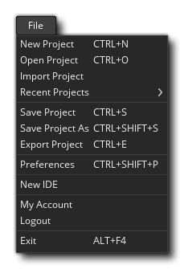

Im Dateimenü können Sie Projekte ändern, speichern oder importieren sowie die IDE-Einstellungen von GameMaker Studio 2 festlegen. Die verfügbaren Optionen sind:
- Neues Projekt - Hier können Sie ein neues Projekt in GameMaker Studio 2 von Grund auf erstellen. Der Dialog "Speichern" wird geöffnet und Sie werden aufgefordert, einen Speicherort für das neue Projekt auszuwählen. Nachdem Sie dem Projekt einen Namen und einen Speicherort zum Speichern gegeben haben, werden Sie zu einem neuen leeren Arbeitsbereich weitergeleitet, in dem Sie mit der Arbeit beginnen können. Projektdateien werden mit gespeichert *.yyp Dateierweiterung.
- Projekt öffnen - Dies öffnet den GameMaker Studio 2- Datei-Explorer, in dem Sie einen zuvor erstellten auswählen können *.yyp Projektdatei zum Laden.
- Projekt importieren - Wenn Sie ein Projekt mit der GameMaker: Studio 1.4- Software von YoYo Games, können Sie diese Option auswählen, um das zu importieren *.gmx oder der *.gmz Datei.
HINWEIS: Um ein früheres GameMaker Projekt in GameMaker Studio 2 zu importieren, muss es mit der Version 1.4 erstellt worden sein. Auch dann funktioniert es möglicherweise nicht direkt beim Import. Zwischen GameMaker Studio 2 und GameMaker: Studio 1.4 gibt es viele Unterschiede. GameMaker müssen ältere Projekte möglicherweise angepasst werden, damit sie funktionieren. Lesen Sie den Artikel Porting A GM: S 1.4 Game zu GameMaker Studio 2 in der YoYo Games Knowledge Base und den Abschnitt des Handbuchs, in dem veraltete Funktionen und Kompatibilitätsskripts behandelt werden.WICHTIG! Das Importieren alter Projekte und YYZ-Projekte ist mit der Testlizenz des Produkts nicht verfügbar.
- Aktuelle Projekte - Sie können diese Option verwenden, zuletzt verwendeten Projekte anzuzeigen. Die Auswahl wird das wieder öffnen Startseite (sollten Sie haben es geschlossen) und Sie können ein kürzlich verwendetes Projekt aus der Liste auswählen dort gefunden.
- Projekt speichern - Dadurch wird das Spiel an dem Ort gespeichert, den Sie beim Erstellen des Projekts definiert haben (oder von wo aus Sie es geöffnet haben).
- Projekt speichern unter - Wie oben angegeben, geben Sie nur den Ort und den neuen Namen des Projekts an.
- Projekt exportieren - Dies exportiert das Projekt als einzelnes Projekt *.yyz Datei. Sehr nützlich, um Kopien an Personen zu senden oder Backups zu speichern.
WICHTIG! Das Exportieren von YYZ-Projekten ist mit der Testlizenz des Produkts nicht verfügbar.- Voreinstellungen - Wenn Sie diese Option auswählen, gelangen Sie in das Voreinstellungsfenster, in dem Sie das Aussehen und Verhalten von GameMaker Studio 2 einstellen können.
- Neue IDE - Wenn Sie diese Option auswählen, wird eine neue Instanz der IDE für Sie geöffnet (sie wird auf der Startseite geöffnet).
- Mein Konto - Diese Option öffnet Ihren Standard-Webbrowser und führt Sie zu Ihrer YoYo Kontoseite.
- Abmelden - Wenn Sie diese Option auswählen, werden Sie von GameMaker Studio 2 GameMaker. Sie müssen sich erneut mit derselben Lizenz (oder einer anderen Lizenz) anmelden, um das Produkt später verwenden zu können.
WICHTIG! Wenn Sie eine Testlizenz für GameMaker Studio 2 und dann eine der anderen Lizenzen kaufen (Desktop, Mobile, UWP, Web oder Console), müssen Sie sich möglicherweise von der IDE abmelden und GameMaker Studio 2 anschließend neu starten erneut, um sicherzustellen, dass die neue Lizenz korrekt angewendet wird (dies sollte jedoch automatisch geschehen).- Beenden - Beenden Sie GameMaker Studio 2 auf dem Desktop.